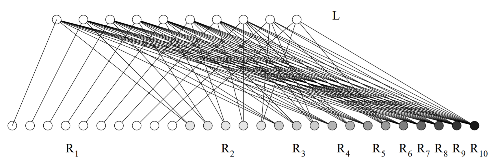

顶点覆盖问题的各种总结
顶点覆盖问题
有一张图，找到一个的一个子集，或。
判定性的问题是，给定一个正整数，问是否能存在一个，使得.
最优化的问题是，找到一个, 使得最小。
复杂度分析
该问题和独立集问题一样难
首先证明顶点覆盖不比独立集简单，对于一张图，若求出了这张图的最大独立集, 取, 我们断言便是这张图的最小顶点覆盖。
首先证明是一个顶点覆盖，采用反证法，若是存在一条边没有被覆盖，由构造过程可以得到, 则与是独立集矛盾，于是是一个顶点覆盖。
再证明是一个最小的顶点覆盖，依旧采用反证法，假设并不是一个最小的顶点覆盖，那么一定存在一个点可以去掉，使得还是一个顶点覆盖，也就是说对于，一定在中，则一定不在中, 于是在中加入依旧是一个独立集, 与是最大独立集相矛盾, 于是一定是一个最小顶点覆盖.
并且独立集问题不比顶点覆盖问题简单, 假设已知最小顶点覆盖, 则取, 我们断言是最大独立集, 证明比较简单, 不再赘述.
该问题是NP-Complete问题
通过 , 我们首先知道.
可以通过多项式归约链推导得到即,
这里暂时不给出证明, 但愿不会咕(
仅仅给出推导链
二分图下的情况
konig 柯尼希定理 暂时没啥想法, 路子是对的, 继续想想.
总之在这种情况下并不是问题，可以通过网络流方法在多项式时间内得到解。
一般情况下
在一般情况下只能寻找近似算法。
度数贪心
一种比较简单的贪心策略是通过度数从大到小进行贪心，这种算法的近似度上界比较难以确定，但是可以比较容易地构造出一个近似度的下界。

在这张图上这样的贪心做法仅仅得到的近似度。
另一种简单贪心
考虑以任意顺序枚举每一条边，如果这条边没被覆盖，则选择这一条边的两个点。
这个简单的做法可以得到近似度为优秀效果。
加权下的顶点覆盖问题
不妨假设选择第个点的代价为, 令表示是否选择第个点。
问题便是最小化
约束条件为
考虑直接将这个形式进行松弛，即令
假设现在得到的解为
那么根据线性规划松弛的原理，一定有
下面进行取整来判断如何根据线性规划得到的解来构造出原问题的解。
如果则选择点。
这样显然得到的点列是一个顶点覆盖。
下面来考虑如何计算这个做法的近似度
根据
有
于是有
于是有
加权形式下的原始对偶算法
不妨假设选择第个点的代价为, 令表示是否选择第个点。
问题便是最小化
约束条件为
考虑直接将这个形式进行松弛，即令
依旧是一开始形式的线性规划。
现在将这个线性规划对偶。
即最大化
约束条件为
则还可以增加，使得某个不等式收紧，则得到最小的增加量
更新整个过程。
取那些取到等号的，构成变量。
可以发现当的时候，整个过程等价于一开始的贪心算法。
下面证明这个算法的近似度。
首先根据对偶的性质有
于是近似度为